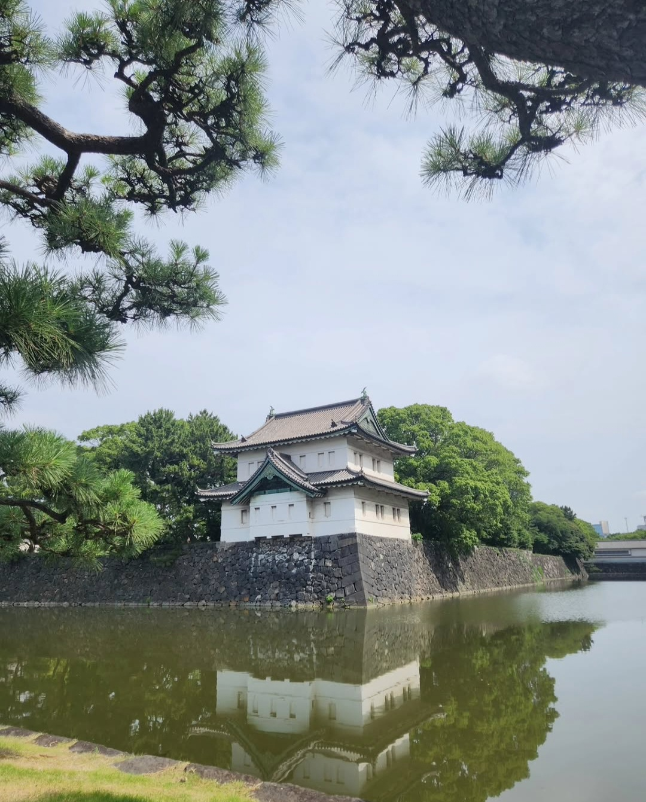

Japan

I visited Tokyo, Kyoto, and Osaka in Japan for a week and a half with my Sister, Mom, and Dad last summer. We were in Japan from July 3-13, 2025. While the weather wasn't ideal, it was truly a once-in-a-lifetime trip with my entire family.
I was also fortunate enough to visit again later that year with my Mom, for her birthday. She and I visited Tokyo again from December 13-21, 2025. The weather was definitely much cooler than the previous trip. They were both very notable trips, and have certainly changed my life for the better.
If I had to pick the two most memorable moments or places, one from each trip, I think I would say visiting Tokyo Skytree and seeing Mount Fuji during the sunset in December was really special, as was hiking to the top of Fushimi Inari in Kyoto with my Dad and Sister sweating our butts off, that was also really memorable (Don't know if I'll be doing that again).